-Photoroom.png)
Kelompok melakukan riset pasar menggunakan kuesioner digital (Google Form) yang disebarkan ke lingkungan SMP Santa Ursula, keluarga, dan teman di luar sekolah untuk menentukan jenis produk dan rentang harga yang diminati.


Berdasarkan penyebaran angket, kami menentukan target market kami:
1. Siswi Santa Ursula
2. Guru/karyawan kampus Santa Ursula Jakarta
3. Orang tua
4. Keluarga siswi Santa Ursula (adik, kakak, dll)
5. Pelajar SMP di luar Santa Ursula
Dengan menentukan target market dan hasil angket tersebut diatas, hal ini memudahkan kelompok kami untuk menentukan produk yang tepat untuk dijual. Penentuan produk juga kami sesuaikan dengan tema Bazar IL kelompok kami yaitu bernuansa cerita Putri Mandalika.
Produk yang kami tawarkan cukup beragam untuk menarik minat berbagai pembeli. Proses pre sales dengan PO juga membantu menentukan jumlah produksi.
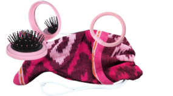
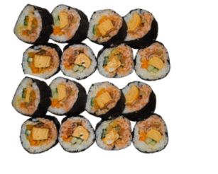
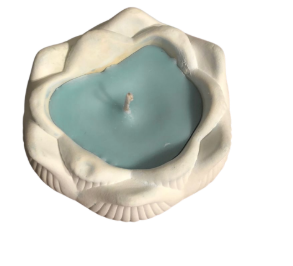
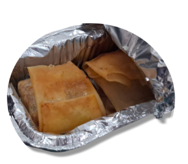
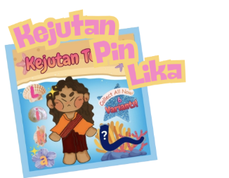
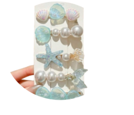
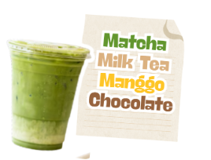
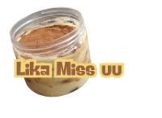
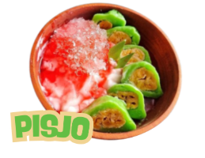
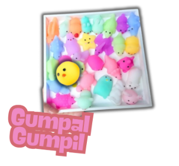
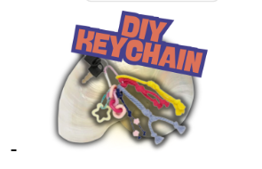
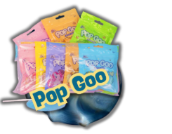
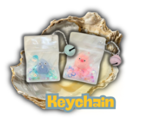
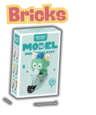